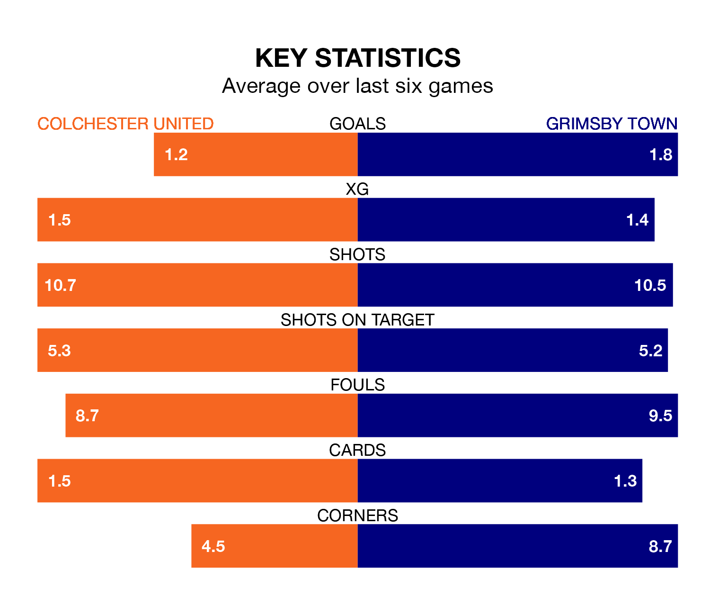

Tuesday's late match at the JobServe Community Stadium sees two relegation candidates play each other, as 22nd-ranked Colchester United host 21st-placed Grimsby Town.
Colchester have picked up 29 points from their first 29 EFL League Two games, with eight wins and five draws.
That is the same number of points as the Mariners have collected, having won six and drawn 11.
In the last 10 years, Colchester and Grimsby have played each other on 13 occasions. Colchester won five of them, Grimsby four, and they drew four times.
On average, the U's scored 1.3 goals and the Mariners 1.2 in those matches.
Their last meeting was on October 24, when Colchester won 3-2 away.
Colchester are in disappointing form in EFL League Two, with one win and three draws from their last six games.
With a win and two draws over that period, Grimsby's form is slightly worse – they have taken five points from 18, compared to United's six.
With 42 goals in 31 games so far this season, the U's are scoring at below the league average rate with 1.4 goals per game. And they are conceding more than average, letting in 59 goals at a rate of 1.9 per game.
Town are also below average scorers, with 1.4 goals per game, compared to a league average of 1.5. They have conceded 1.8 goals per game.
Colchester's last match was on Saturday, a 1-0 loss against Harrogate Town.
Grimsby lost 3-1 against Stockport County last time out, also on Saturday, with Abobaker Eisa on the scoresheet.
Tuesday's match will be refereed by Carl Brook, who has taken charge of seven EFL League Two games so far this season, issuing no red cards and booking 33 players. He has not awarded any penalties.
The last Colchester game Brook refereed was a 3-2 home loss to Milton Keynes Dons on August 19. He is yet to oversee a match featuring Grimsby this season.
Updated: 13:30 (UTC), 12/02/24